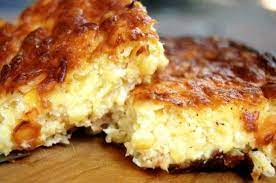

Chipa Guazu

Antecedentes
La chipa guazu es una especie de pastel de choclo cocinado al horno, y constituye una de las setenta variedades identificadas de comidas llamadas "Chipa". Es una herencia de la cocina mestiza guarani-española y es tradicional de la gastronomia de Paraguay y del Nordeste argentino.
Ingredientes:
- 1 kilo de Maíz Fresco
- 6 huevos
- 1/2 taza de Leche
- 2 cebollas medianas
- 500 gramos de Queso muzzarella
- Sal al gusto
- 100 ml de aceite
Pasos:
- Pelar y cortar las cebollas en trozos no muy pequeños. Colocar las cebollas en un olla con un poco de sal y el aceite a fuego lento por 10 minutos hasta que estén transparentes, retirar del fuego y reservar.
- En la licuadora colocar la mitad de la leche con 3 huevos con la mitad del maíz y procesar. Repetir el mismo proceso con la otra mitad del maíz.
- Mezclar lo que sacamos de la licuadora con las cebollas y agregar el queso desmenuzado con la mano.
- Precalentar la bandeja, previamente aceitada, en el horno a 220° por 10 minutos.
- Retirar la bandeja del horno, verter la mezcla y llevar al horno a 200° grados por 50 minutos. A los 25 minutos girar labandeja para que la cocción sea pareja.
- Retirar del horno y servir.
¡Buen provecho!